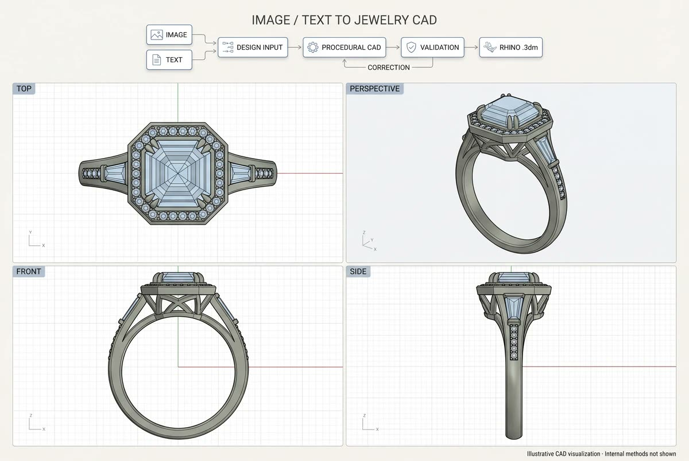
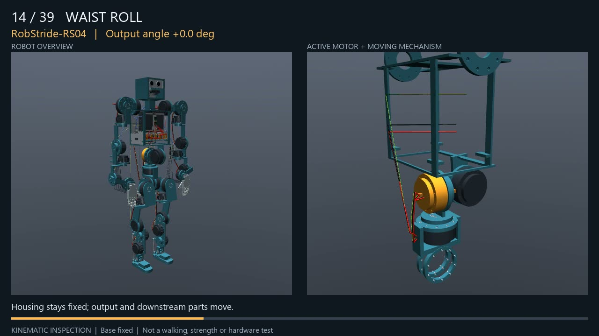
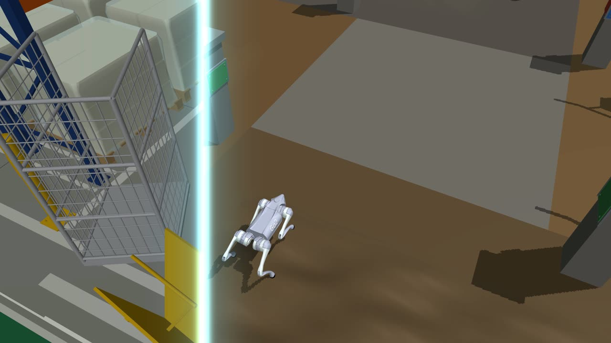
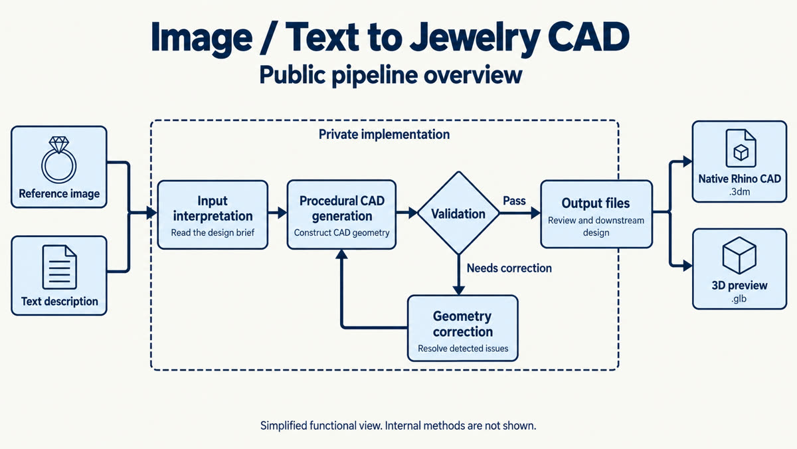

I build AI that makes things.
I'm an electrical engineering graduate and an AI engineer and researcher at Rare Sense Inc. I work on systems that turn text and images into editable 3D models and CAD, automation pipelines for real businesses, and robots that are designed and tested in simulation before anything is built. I train models, automate workflows and build pipelines end to end.




3D assets that are code, not meshes.
Co-author of Nova3D: Code-Native Generation of Programmable 3D Assets with Nimra Noor, Muhammad Bilal and Hassan Baig (arXiv 2607.22738, July 2026). Nova3D generates text-to-3D and image-to-3D assets by writing executable Blender code. The compiled GLB keeps named parts, a real assembly hierarchy, joints and edit handles from the start, so nothing has to be rebuilt later through segmentation or rigging.
compared against eleven baselines from mesh, part-structured, code-native and CAD families · code: github.com/RareSense/Nova3D
From a photo to editable CAD.
Together with Nimra Noor, I built one of the first pipelines that turns a reference image or a text description of a ring into editable, native Rhino CAD (.3dm). The design is read, the CAD is built procedurally, then validated and corrected automatically, so every stone, prong and band arrives as its own editable object, not a fused mesh.
This powers the CAD side of FormaNova CAD Studio, Rare Sense's AI jewelry platform, which also creates AI jewelry photoshoots. The full story is in my article From procedural rings to native Rhino CAD.
Pipelines for real brands.
AI systems that do a whole job, not a single step: data collection and cleaning, model training, inference, validation and delivery, running automatically.
Garment automation for J., Sitara and Kollective Moda
Automation pipelines for fashion brands' garment imagery and production workflows.
Image and text to jewelry CAD
Procedural CAD with automatic validation and correction, exporting native Rhino files.
Pipeline recording studio
A Three.js app that animates the Nova3D image-to-3D pipeline stage by stage (point cloud, mesh reveal, tri-view, exploded parts) for demos and papers.
Training and inference
Vision transformer classification, inference tooling and dataset pipelines (see GitHub).
Social media posting automation
Automated content scheduling and posting across platforms.
Text-to-3D and image-to-3D
Generation pipelines that output structured, editable 3D with parts and joints, ready for games, XR and simulation.
Robots, tested in simulation.
Robot dog in a Nova3D digital twin
A quadruped robot simulated in MuJoCo, walking through riverbanks, warehouses, offices and rough ground generated with Nova3D.
Every motor, one by one
A humanoid design built from real actuators (RobStride RS04 joints, ROBOTIS XC330 finger servos), with each motor driven in turn to check its range and mechanism.
- Full humanoid program: joints, motors with real weights, battery and electronics, covers, and simulations for standing, falling, collisions and motor torque.
- Digital twins of real spaces built with Nova3D, used to test robots before deployment.
- Physics simulation in MuJoCo, CAD and rendering in Blender.